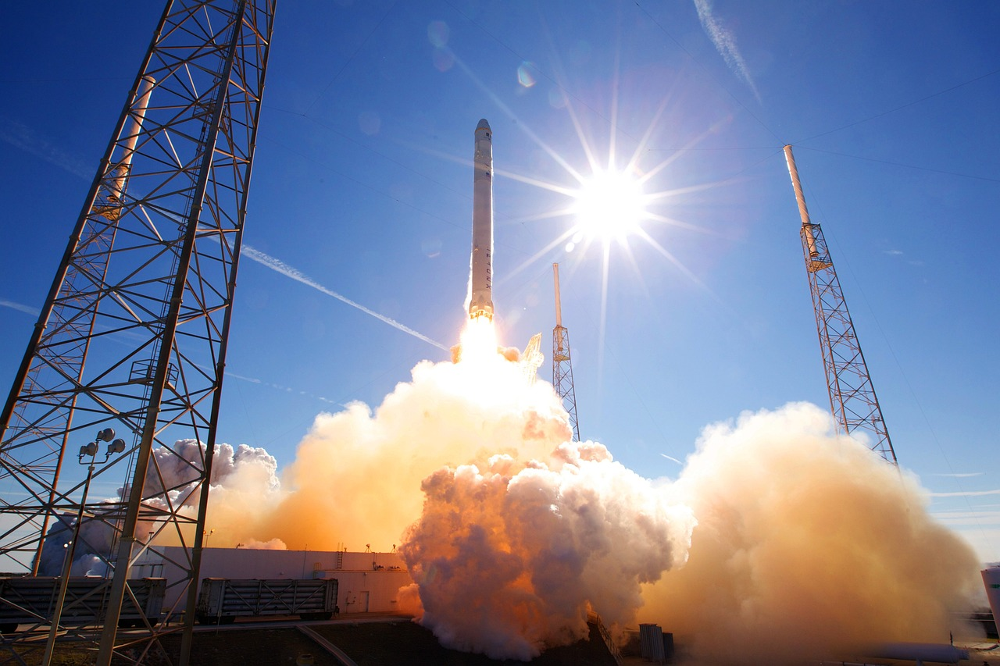

A Brief Overview of the Sun

The sun is a star located at the center of the solar system. It is a massive ball of hot gas that emits light and heat, which sustain life on Earth. The sun's diameter is about 109 to that of Earth.... Read more
Introduction to Supernova

A supernova is a powerful and luminous explosion of a star. A supernova occurs during the last evolutionary stages of a massive star or when a white dwarf is triggered into runaway nuclear fusion....Read more
Dwarf Planet

A Dwarf planet is a small planetary-mass object that is in direct orbit of the Sun,smaller than any of the eight classical planets but still a world in its own right....Read more
Meteoroid
A meteoroid (Or Shooting star) is a small rocky or metallic body in outer space. Meteoroids are distinguished as objects significantly smaller than asteroids,....Read more
Asteroid
An asteroid is a minor planet—an object that is neither a planet nor a comet—that orbits within the inner Solar System.They are rocky, metallic or icy bodies with no atmosphere....Read more
The Perseverance Rover: Unraveling the Mysteries of Mars

NASA's Perseverance rover is a robotic spacecraft that was launched on July 30, 2020, with the goal of exploring the Martian surface and searching for signs of past or present microbial life.
The rover landed successfully in Jezero Crater on February 18, 2021, and has been conducting scientific experiments and collecting data....Read more
Space Debris: The Growing Threat to Space Exploration

An asteroid is a minor planet—an object that is neither a planet nor a comet—that orbits within the inner Solar System.They are rocky, metallic or icy bodies with no atmosphere....Read more
The International Space Station: Living and Working in Space

The International Space Station (ISS) is a large, orbiting spacecraft that serves as a research laboratory and a platform for space exploration and international cooperation. It is one of the most complex and ambitious engineering projects ever undertaken, involving....Read more
Exoplanets: Searching for Habitable Worlds Beyond Our Solar System

Exoplanets are planets that orbit stars outside our solar system. They offer insights into how planets form and the potential for life beyond Earth....Read more
The James Webb Space Telescope: A New Era of Deep Space Observation

The JWST is a large, complex spacecraft that is designed to operate in a special orbit around the Earth, known as a Lagrange point. It is equipped with a variety of cutting-edge instruments and technologies that will allow it to observe the universe....Read more
The Hubble Space Telescope: Unveiling the Wonders of the Universe

The Hubble Space Telescope is a large, space-based telescope that has captured some of the most stunning images of the universe ever seen. Since its launch....Read more
The Great Red Spot: Jupiter's Iconic Storm

The Great Red Spot is a massive storm on Jupiter, larger than Earth, characterized by its swirling, reddish-brown appearance and winds up to 400 mph. It is shrinking and....Read more
The Surprising Discoveries of the Voyager Spacecraft

In 1977, NASA launched two spacecraft called Voyager 1 and Voyager 2 on a mission to explore the outer solar system. These twin spacecraft have captured our imagination ever since, as they continue to send back data and images from billions of miles....Read more
The Role of Space Agencies: ISRO, NASA, ESA and Beyond
Uncover the vital roles played by renowned space agencies such as ISRO, NASA, ESA, and others in shaping our understanding of the universe. Explore their significant contributions to scientific breakthroughs, technological advancements....Read more
Lunar Prospects: Exploring the Potential of Moon Colonization

Lunar prospects is a topic that explores the possibility of establishing a human presence on the moon and the potential benefits and challenges of such a mission. Colonizing the moon has been a topic of....Read more
The Search for Dark Matter: Unveiling the Invisible Universe

Dark matter is a type of matter that does not emit, absorb, or reflect light, making it invisible to telescopes and other forms of traditional observation. Scientists have inferred the existence of dark matter from its....Read more
Space Tourism: Challenges and Opportunities for the Future

Explore the thrilling frontier of space tourism and discover the challenges and boundless opportunities that await in the cosmos. Uncover the remarkable prospects and hurdles that define the future of space tourism....Read more
Spacecraft Propulsion Systems: From Chemical to Ion Thrusters
Spacecraft propulsion systems are critical for enabling space exploration and research. From traditional chemical rockets to more advanced ion thrusters, this topic examines the different types of propulsion systems used in spacecraft and their....Read more
The Role of Artificial Intelligence in Space Exploration

Artificial intelligence (AI) is intelligence—perceiving, synthesizing, and inferring information—demonstrated by machines, as opposed to intelligence displayed by humans or by other animals....Read more
The Fermi Paradox: Where Are All the Extraterrestrial Civilizations?

The Fermi Paradox is the apparent contradiction between the high probability of the existence of extraterrestrial civilizations....Read more
Exploring the Mysteries of Black Holes

A black hole is a region of spacetime where gravity is so strong that nothing, including light or other electromagnetic waves, has enough energy to escape it....Read more
The Implications of Colonizing Mars

Mars has been a topic of fascination for astronomers and space enthusiasts for decades. With its similarities to Earth in terms of size and location in the solar system, many scientists believe that Mars could be a viable destination for human colonization in....Read more
The Connection Between Space and Time: Einstein's Theory of Relativity

Explore Einstein's groundbreaking Theory of Relativity and unravel the intricate connection between space and time. Discover how this revolutionary theory transformed our understanding of the universe and its fundamental principles.....Read more
The Formation and Evolution of Galaxies

Galaxies are vast collections of stars, gas, and dust that are held together by gravity. Over billions of years, galaxies have evolved and transformed, changing in size, shape, and composition. Through observations and simulations, scientists have....Read more
The Challenges of Living in Microgravity on the International Space Station

Living in microgravity aboard the International Space Station (ISS) is a unique and challenging experience. The station orbits the Earth at an altitude of approximately 408 kilometers, and completes one full orbit every 90 minutes. This means that astronauts onboard the ISS experience weightlessness, or a state of microgravity, as they float....Read more